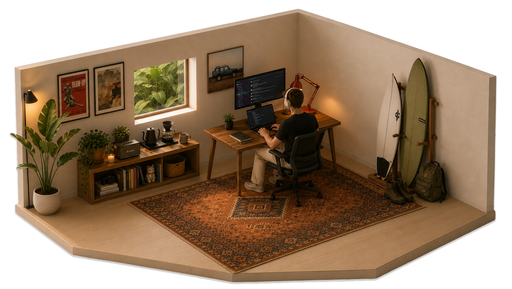

I grew up in Australia and spent the last three years living in the UK.
I don't think I'm particularly smart. I compensate by being clever and working incredibly hard.
Tech startups keep me close to the 0→1 feeling. Not leaving this scene anytime soon.
Outside of that, I'm usually in the water or somewhere up a mountain.
Led GTM, growth, content, and user ops at a crypto derivatives neobrokerage. Drove $28M+ in pre-launch deposits, 50K+ waitlist, 60K+ X followers, and $850M+ in trading volume within the first 3 weeks of launch.
One-person marketing team owning all functions end-to-end. Led GTM for recurring vault product launches contributing to $280M–$404M in platform trading volume during tenure.
Led GTM for two perpetual trading product launches on Arbitrum — Perpetual Pools ($800M+ in trading volume) and a GMX-fork perps venue ($1.7B+ in trading volume, $50M+ TVL).
Founding team member of an athlete mental health app. Built a community of 50+ Australian Olympic and professional athletes as brand ambassadors with zero budget, driving 2K+ active users to beta.
Studied business with a focus on marketing and strategy.
Infrastructure built at Cascade — brand, comms, ops and community, all systematised. Systems that let the team operate without me in the room.
Brand voice, Cascade comms, and marketing copy — all runnable by the team without Lucas's input.
Written standards for visual identity, copy tone, and brand application — so the standard held without Lucas in the room.
Depositor history treated as relationship capital — context, preferences, and conversation history in one place.
Pulls Granola, Slack, and Calendar into a structured Notion daily page. One command, full day context.
Visualising the referral networks of each KOL in the userbase — referred trading volume and invite code usage in one view.
Community-access system tying Discord permissions and progression to specific platform activity — trading volume, deposits, and PnL.
6 systems · more in progress.
A mix of launch work, thought pieces, and the occasional tweet that landed.
My thoughts on the next generation of crypto companies. The "fintech" era is here and the "onchain" days are over. Brokerages will look boring, feel familiar, and quietly run on crypto rails underneath.
The introductory article of a completely new brand, pre-product. My way of telling a captivating brand story behind a relatively boring vision.
3 pieces · more coming.